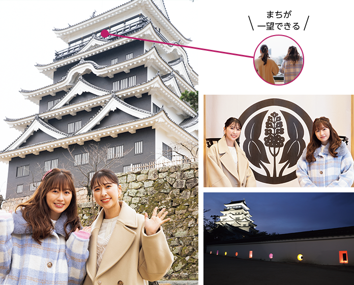
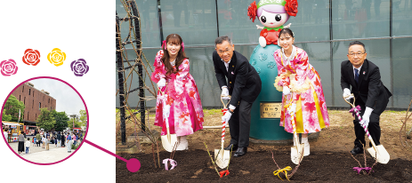
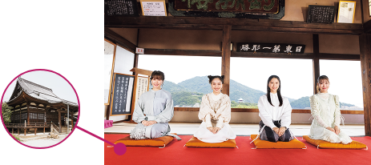
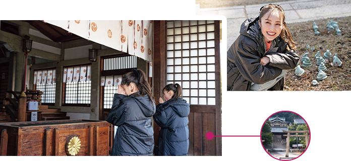
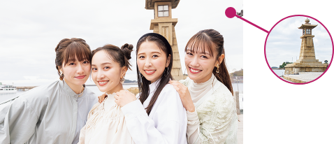
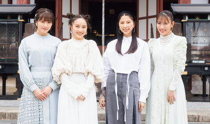

市政の動きやまちの話題を紹介します ふくやまニュース
ももクロ春の一大事2023
イベントレポート
23,000人が
福山通運ローズスタジアムに集結！
ついに、ももクロに会えたZ～
4月22日・23日に、人気アイドルグループ「ももいろクローバーZ」の音楽イベント「ももクロ春の一大事」が開催され、会場の竹ケ端運動公園は多くの人の熱気に包まれました。会場周辺には地元企業によるコラボ商品の販売ブースも登場。また市中心部の商店街でも夜店が開催され、まちを挙げて盛大に盛り上がりました。
メンバーはばらをモチーフにした衣装や地元のデニム生地を使用した衣装でライブステージに登場。本市を訪れたエピソードを語ると、会場からは歓声が沸きました。
写真◎上飯坂一、小境勝巳
ももクロメンバーが訪れた
「聖地Z7」を巡ろう！
イベント開催に先立って、ももクロの4人が本市へ来訪。観光、文化、産業などに触れてもらい、本市の魅力を広くアピールする機会となりました。皆さんもぜひ、ももクロメンバーが訪れた7つの聖地を巡ってみてはいかがでしょう。
ももクロメンバー来訪日
- メンバー全員／4月6日、22日・23日
鞆の浦（対潮楼・常夜燈）、明王院、竹ケ端運動公園 - 玉井詩織さん・佐々木彩夏さん／2月18日
福山城、中央公園 - 百田夏菜子さん・高城れにさん／3月19日
竹ケ端運動公園、鞆の浦（沼名前神社）
-
1福山城
福山城では火縄銃などのコンテンツを体験。城壁の狹間はメンバーカラーの4色にライトアップされました。
-
2中央公園
本市を訪れた記念に、メンバーカラー4色のばらを植樹。秋にも見頃を迎えます。ぜひ行ってみてください。
-
3福禅寺 対潮楼
イベントのオープニング映像を撮影。座敷から海の眺めを楽しみました。
-
4竹ケ端運動公園
百田さんと高城さんが「第41回ふくやまマラソン」にサプライズ登場！高城さんは市民の皆さんと一緒にコースを走り、会場を沸かせました。
-
5沼名前神社
「鞆の祇園さん」として親しまれる神社で、イベントの成功を祈願しました。
-
6常夜燈
鞆の浦のシンボルで潮待ちの港の景色を堪能しました。
-
7明王院
国宝「五重塔」「本堂」を観て厳かな気分を味わいました。
枝広市長の今月のひとこと
4月に開催された「ももクロ春の一大事2023 in福山市」は好天にも恵まれ、全国から集まった多くのファン（モノノフ）の皆さんで大いに盛り上がりました。来場された人からは「福山に初めて来ました。とてもすてきなまちで大好きになりました」「観光や食事など大満足のライブになりました」といった声をいただきました。市全体が色鮮やかに染まり、笑顔があふれるまさに「一大事」なイベントになりました。
開催にあたり、市民の皆さんには交通規制などにご協力いただきありがとうございました。このイベントを通して、これまでの開催地やモノノフの皆さんとたくさんのつながりが生まれました。このつながりを生かし、本市の魅力をより一層発信できるよう取り組んでまいります。